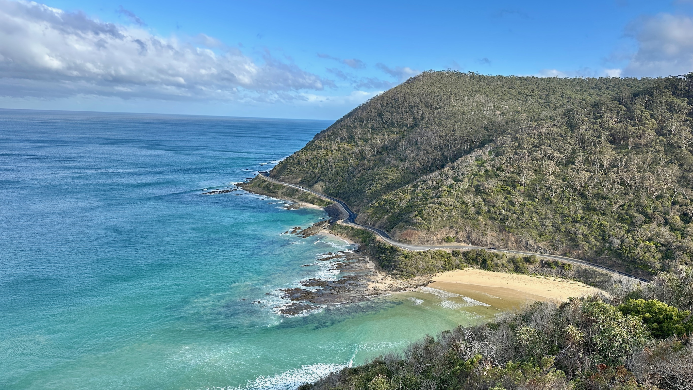
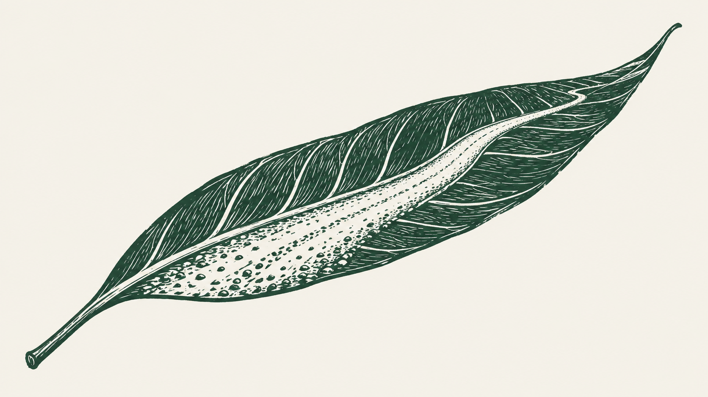

From gravel roads and bush camps, high country, snow, castles, coastlines and
wherever the next road goes, Gravel & Gum images are often candid, always natural and
never artificially generated.
May these images open your door to the world.
The Gravel & Gum Story
Every picture here and published started with a drive, ride, hike or walk, not a stock
library. Raised with a spirit of adventure where life is more fun if you say "yes" to
experiences, adventure and travel shared.
I'm based in Victoria, Australia. I print and post from here, on 200 gsm premium
matte paper by an Australian print partner, so a print from Gravel & Gum isn't
waiting three weeks to clear customs.
Luggage tags and phone cases made to travel are on sale now — see
where to buy. Coasters, cards and small prints are next.

 Norah Head Lighthouse luggage tagShop now
Norah Head Lighthouse luggage tagShop now
 Twelve Apostles luggage tagShop now
Twelve Apostles luggage tagShop now
 Kookaburra luggage tagShop now
Kookaburra luggage tagShop now
 Night Sky luggage tagShop now
Night Sky luggage tagShop now
 Kookaburra clear iPhone caseShop now
Kookaburra clear iPhone caseShop now